The color scheme was the first step of building my website. I used coolors.co to generate a color scheme for my website.
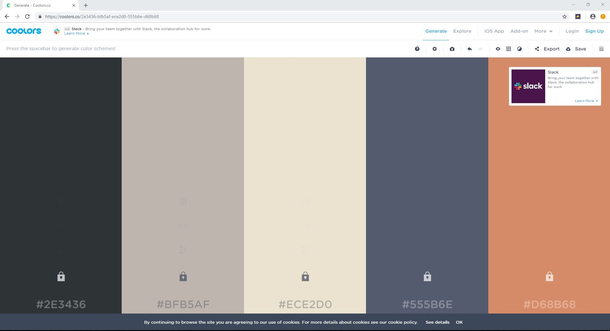
Navigation Bar.
After i had chosen the colors I wanted to use for my website I then started looking at designing a navigation bar.I searched on Youtube how to create a navigation bar and came across a video I liked.The navigation bar was transparent on an image and I liked the modern feel that it had.
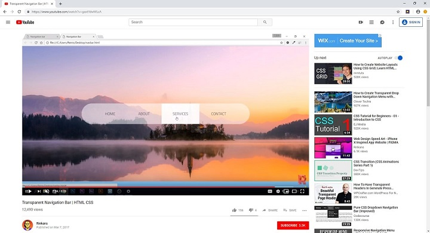
Background Image.
I then found an image from Port Macquarie where i grew up and used that for the background of my homepage navigation.
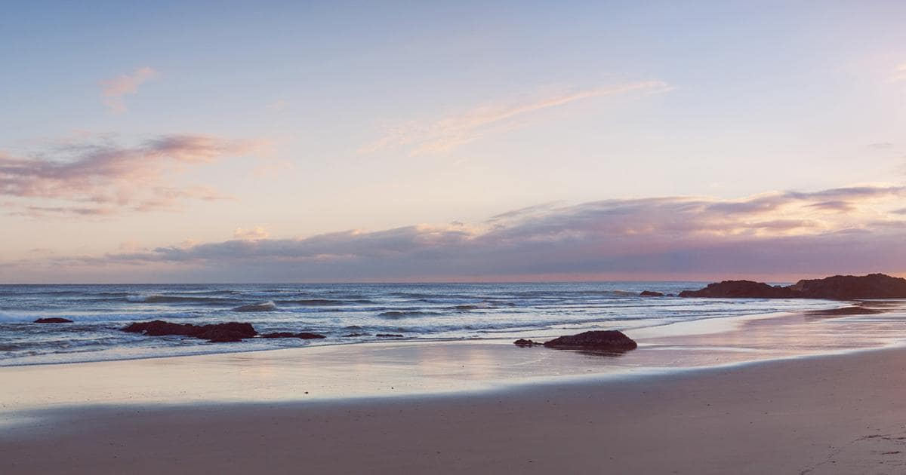
Attributes.
I got some help from w3schools.com on how to set the background to an image and how to change attributes within thebackground image.
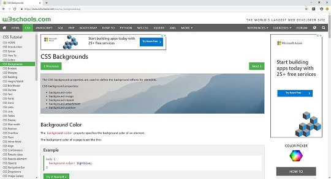
Image Border.
After finishing the bottom bar of the page I added information about myself below this section.I found some interesting image border styles on www.css3.info and added an image border to my image
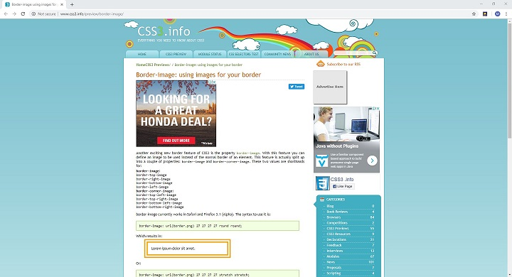
Fonts.
I found some fonts for my webpage at websitesetup.org and used Comic Sans MS for my headings and Garamond for my paragraph.
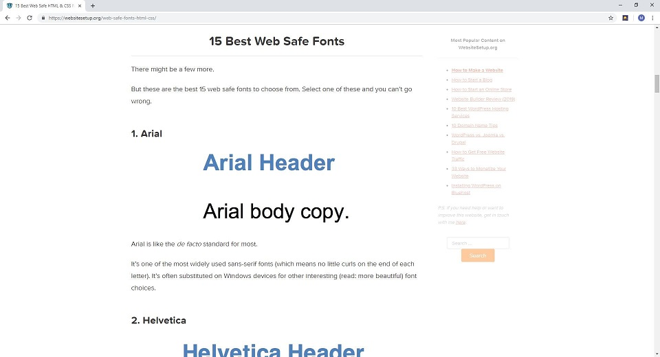
Table.
I added a table at the bottom of my webpage which contained information about me. I learnt how to do the tables at w3schools.com
Classes and id's
For the Home page i used no classes but used seven id's:
home - Used to style the body of the homepage.
homeheader - Used to style the MitchTreeves.com at the top of the webpage.
homenavbar - used to group the elements in the div for the navigation bar.
homeselected - Used to hightlight Home button on navigation bar.
bottombar - Used to style the bottom bar and the text on the bottom bar.
homecontent - Used to group the elements with information about me.
course - Used to add special style to the course name on the page.
Selectors
For the Home page i used 20 CSS selectors:
home - Used to set background color of the homepage.
homeheader - Used to set height and width for MitchTreeves.com at the top of the webpage aswell as add a backgound color.
homeheader h1 - Used to add padding to MitchTreeves.com aswell as set text color to white.
homenavbar - Used to set width, padding and background image of navigation bar.
homenavbar h1 - Used to style the text above the navigation bar.
homeselected - Used to highlight home button on navigation bar.
nav ul - Used to set width, background color, border radius and center the navigation bar.
nav ul li - Used to put the buttons horizontally by making it inline-block.
nav ul li a - Used to style the text in navigation bar buttons.
nav ul li a:hover - Used to change text in buttons on navigation bar when the buttons are hovered over.
bottombar - Used to style bottom bar and define height and color.
bottombar h1 - Used to style the text in the bottom bar by setting boldness, background color, margin and font size.
bottombar a - Used to make text on bottom bar white and take away underline.
homecontent - Used to set background color and width of the container for the information at bottom of page.
homecontent h1 - Used to set font size and font family for content of webpage.
homecontent img - Used to set height and width of image.
homecontent table - Used to center table and add padding..
th, td - Used to add borders to the table and move text in table cells so it's not sitting too close to the left.
homecontent td - Used to center text in table, set font size, set font family, and add more space to the left of the cells.
course - Used to make bold and underline the course name.
With the aesthetics of the website. I chose a colour scheme when creating the home page that would have nice contrasting colors. I focused alot on how my first page looked and was very happy witht the way the navigation bar was transparent on the background image. I copied this idea from a Youtube video and implemented it on my website and changed it abit.
With the information at the bottom of the Home page I made it so the content was centered and that there was banners on the left and right being the background of the body. This has a nice feel to the page as it centers the information and makes it easy for the viewer of the webpage to take in the information. When designing the webpage I aimed for simplicity in not having too much content on the screen at once.
I kept the theme of the Website consistent throughout the pages and for the past.html, future.html and comments.html I used the same navigation bar to make it easy to navigate through the page.
With the comments page I created an index to make the comments easier to navigate and to access sections of the page quicker. I also added a link on the Home page to the top of the home page so users wouldn't have to scroll.
In terms of accessibility of the website I used alt tags to make it easy for blind users to know what the images are describing. My website has limited user input other than clicking buttons which makes it easily accessible and user friendly. I added hyperlinks on the long webpages such as comments.html and index.html to make it easier for users to get back to the top of the page.
Index
HOME PAGE COMMENTS
Colors being used.
The color scheme was the first step of building my website. I used coolors.co to generate a color scheme for my website. 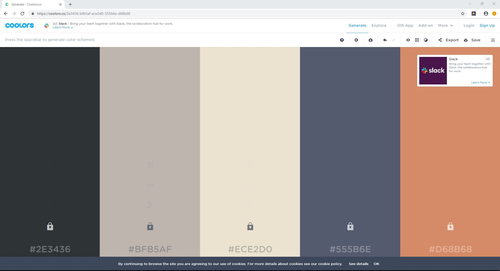
Navigation Bar.
After i had chosen the colors I wanted to use for my website I then started looking at designing a navigation bar.I searched on Youtube how to create a navigation bar and came across a video I liked.The navigation bar was transparent on an image and I liked the modern feel that it had. 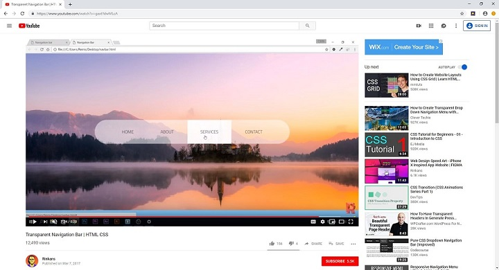
Background Image.
I then found an image from Port Macquarie where i grew up and used that for the background of my homepage navigation.
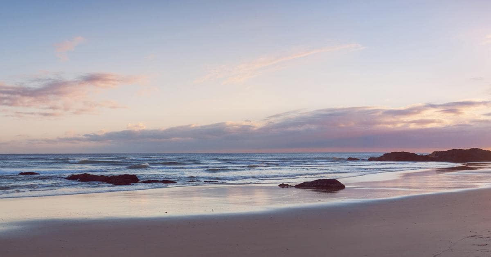Attributes.
I got some help from w3schools.com on how to set the background to an image and how to change attributes within thebackground image.
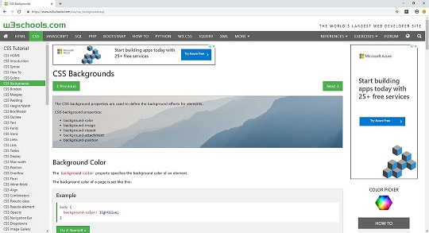Image Border.
After finishing the bottom bar of the page I added information about myself below this section.I found some interesting image border styles on www.css3.info and added an image border to my image
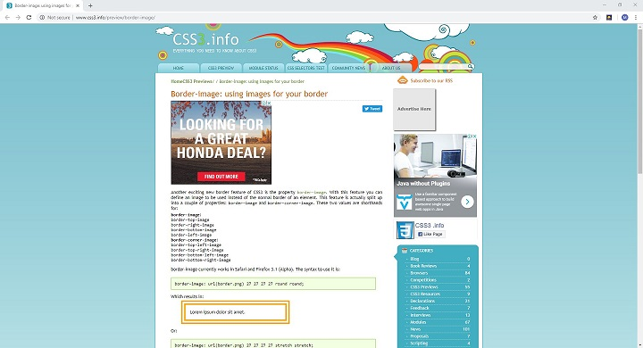Fonts.
I found some fonts for my webpage at websitesetup.org and used Comic Sans MS for my headings and Garamond for my paragraph. 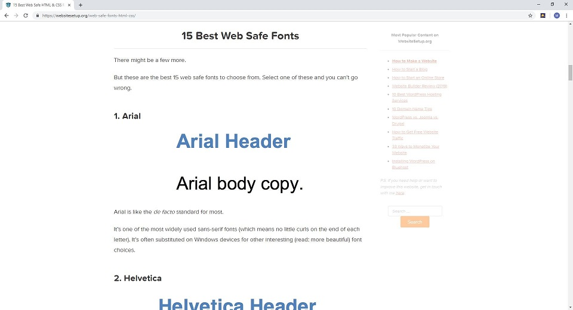
Table.
I added a table at the bottom of my webpage which contained information about me. I learnt how to do the tables at w3schools.com
Classes and id's
For the Home page i used no classes but used seven id's:
Selectors
For the Home page i used 20 CSS selectors:
PAST AND FUTURE PAGE COMMENTS
Past / Future / Comments Navigation barClasses and id's
For the Past and Future page I used 1 class and 3 id's:
Selectors
For the Past and Future page I used 5 CSS selectors:
PAST / FUTURE / COMMENTS PAGE NAVIGATION BAR COMMENTS
Back to top.
Classes and id's
For the Past and Future Navigation bar I used 1 class and 1 id:
Selectors
For the Past and Future page I used 7 CSS selectors:
AESTHETICS
Back to top.
With the aesthetics of the website. I chose a colour scheme when creating the home page that would have nice contrasting colors. I focused alot on how my first page looked and was very happy witht the way the navigation bar was transparent on the background image. I copied this idea from a Youtube video and implemented it on my website and changed it abit.
With the information at the bottom of the Home page I made it so the content was centered and that there was banners on the left and right being the background of the body. This has a nice feel to the page as it centers the information and makes it easy for the viewer of the webpage to take in the information. When designing the webpage I aimed for simplicity in not having too much content on the screen at once.
I kept the theme of the Website consistent throughout the pages and for the past.html, future.html and comments.html I used the same navigation bar to make it easy to navigate through the page.
With the comments page I created an index to make the comments easier to navigate and to access sections of the page quicker. I also added a link on the Home page to the top of the home page so users wouldn't have to scroll.
ACCESSIBILITY
Back to top.
In terms of accessibility of the website I used alt tags to make it easy for blind users to know what the images are describing. My website has limited user input other than clicking buttons which makes it easily accessible and user friendly. I added hyperlinks on the long webpages such as comments.html and index.html to make it easier for users to get back to the top of the page.